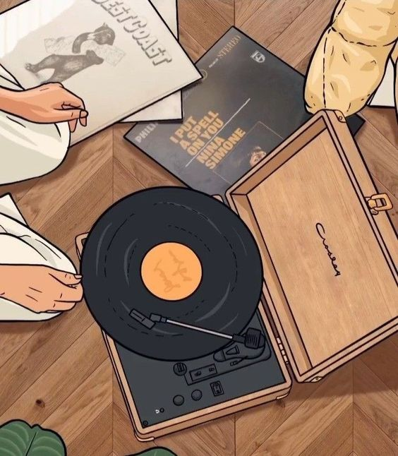
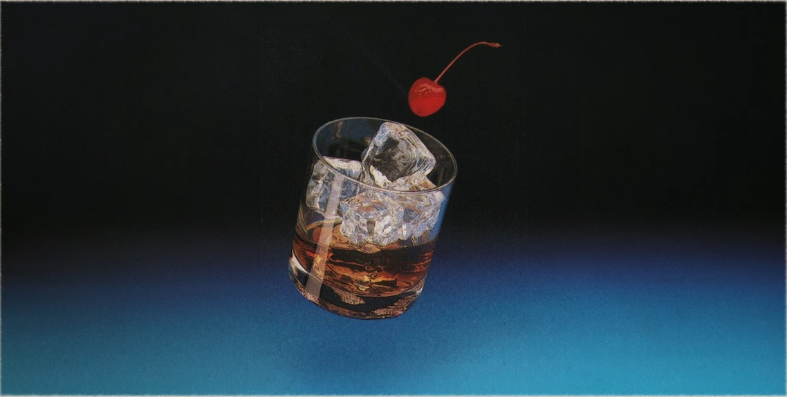

Lofi is Awesome
Literally meaning “low fidelity”, its audible imperfections and imperfect quality make it the quintessential, relaxing background music used by people all over the world.
Lofi is Awesome
Literally meaning “low fidelity”, its audible imperfections and imperfect quality make it the quintessential, relaxing background music used by people all over the world.
The more popular types of lofi
Hiphop

lofi takes a lot of inspiration from hip hop — in particular, the use of drum loops – think Samurai Champloo & Nujabes.
Jazz
Makes the most use of string and wind instruments, and it contains a swing and syncopation typical to traditional jazz music.
House
Often described as hearing nightclub music from the outside, lofi house takes on a more upbeat rhythm compared to other lofi genres.
Synthwave
More commonly known as chillwave and sometimes Glo-Fi, lo-fi synthwave is a genre characterized by its faded sound and escapist lyrics.
What do I like about lofi music? Everything! It is literally the best. I listen to lofi music every second of my life. I'd call it an unhealthy addiction, but I'm only getting happier! We were born in the perfect era to witness the peak of musical creation.
Lofi is the modern day classical music!
Sign up get exclusive lofi news, lofi songs, and vip access to all our future events